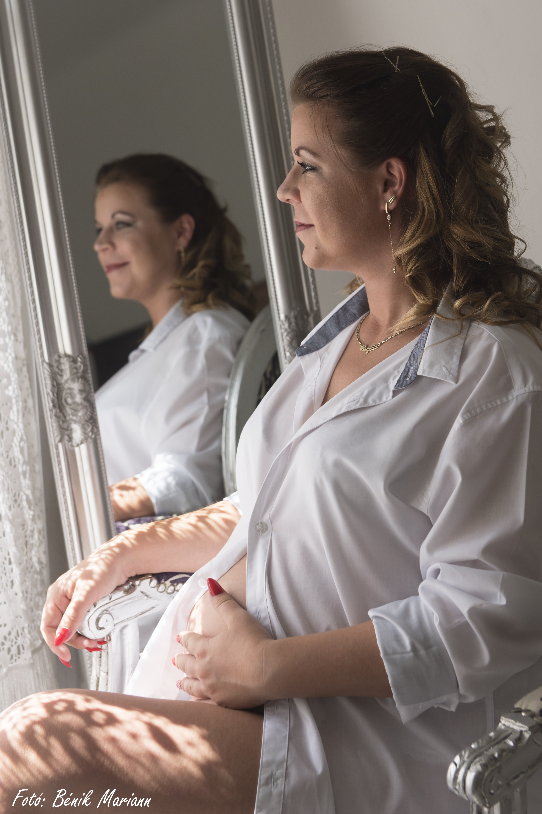
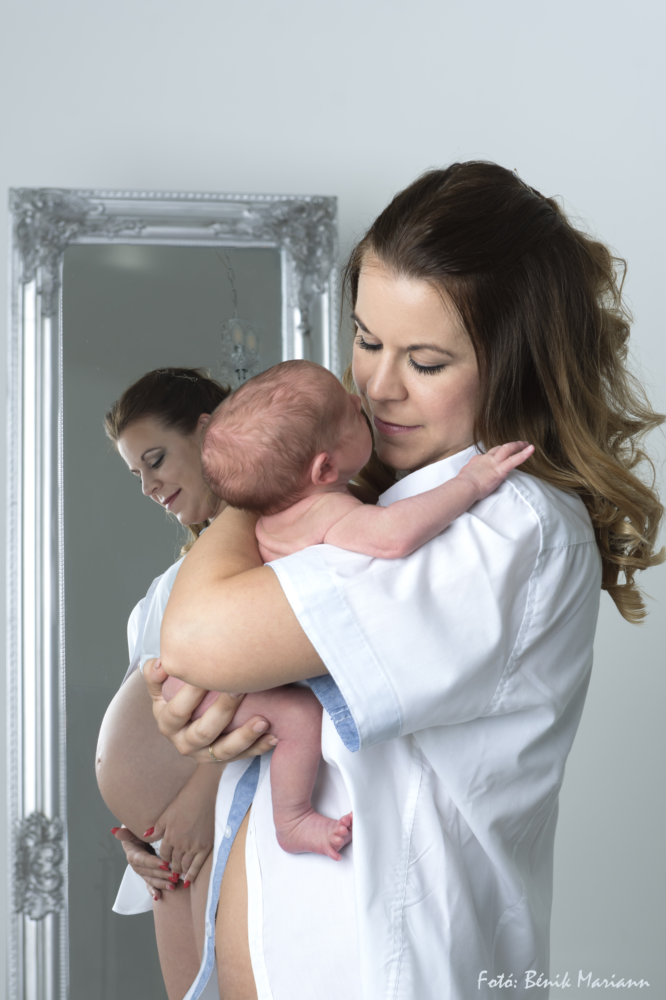
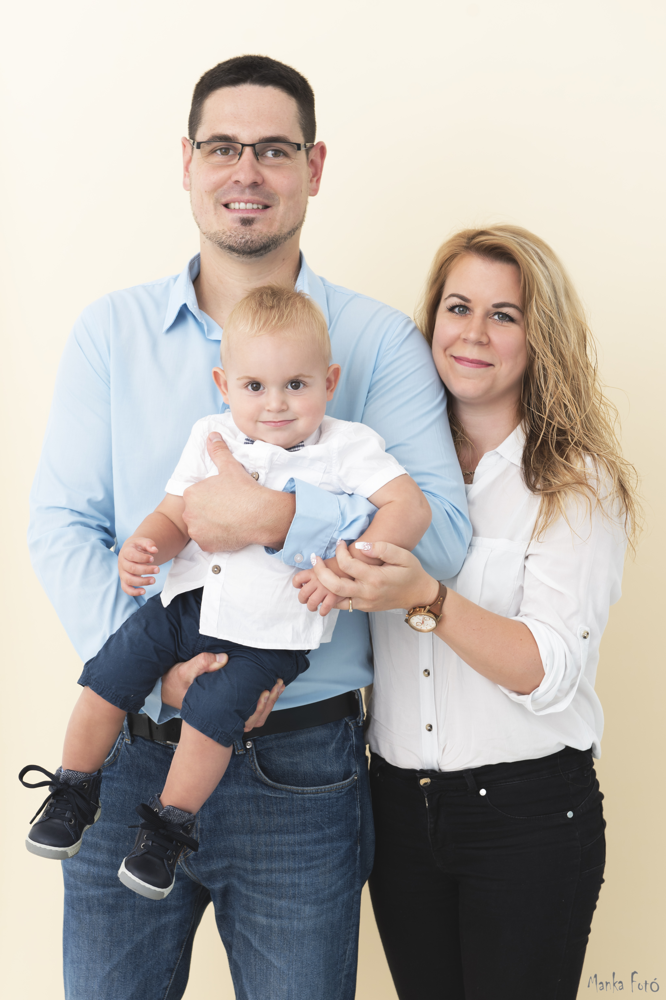

A fotózás régi szerelem nálam, de tanulni 2016-ban kezdtem, a két gyermekem születését követően. Azóta is folyamatosan képzem magam. Soha nem elégszem meg a jelenlegi tudással, a folyamatos fejlődés híve vagyok. Sok témát szívesen fotózok, de mindig az ember volt, ami a legjobban megfogott mindközül. Nincs is jobb érzés egy fotós számára, mint egy jól elkapott pillanat, érzelem, ami a fotón visszaköszön.


